Back to main page
Help
Vessels and tanks
Name
ISO10628-RegNr
ISO14617-RegNr
Possible representations
Symbol
Container
-
-
http://data.posccaesar.org/rdl/RDS898262151
Fluid container
-
-
http://data.posccaesar.org/rdl/RDS898290191
Vessel
ISO10628-301
-
http://data.posccaesar.org/rdl/RDS414674
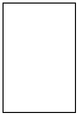
Open tank
ISO10628-2061
ISO14617-2061
http://data.posccaesar.org/rdl/RDS4316824468
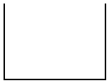
Conical roof tank
ISO10628-X2063
ISO14617-X2063
http://data.posccaesar.org/rdl/RDS436634
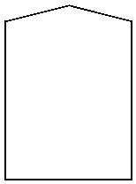
Dome roof tank
ISO10628-X8200
-
http://data.posccaesar.org/rdl/RDS437039
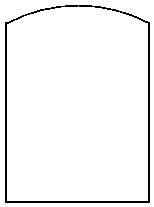
Pressure vessel
ISO10628-2062
ISO14617-2062
http://data.posccaesar.org/rdl/RDS427229
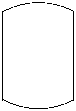
Vessel with two diameters
ISO10628-X8201
-
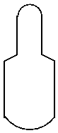
Spheric vessel
ISO10628-2063
ISO14617-2063
http://data.posccaesar.org/rdl/RDS4316863640
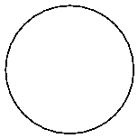
Open tank with conical bottom
ISO10628-2064
ISO14617-2064
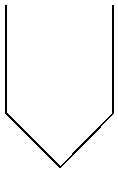
Tank with conical bottom
ISO10628-X2062
ISO14617-X2062
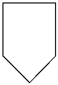
Vessel with dished roof and conical bottom
ISO10628-X8008
-
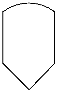
Vessel with conical heads
ISO10628-X8009
-
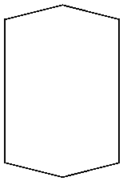
Container for solids, liquids, gases
ISO10628-C0001
-
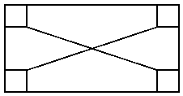
Barrel
ISO10628-2067
ISO14617-2067
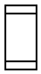
Gas bottle
ISO10628-C0002
-
http://data.posccaesar.org/rdl/RDS5775946
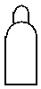
Bag
ISO10628-2068
ISO14617-2068
http://data.posccaesar.org/rdl/RDS11526002
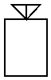
Vessel with feet
ISO10628-X8002
-
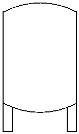
Vessel with lugs
ISO10628-X8003
-
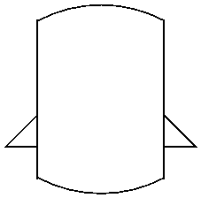
Vessel with skirt
ISO10628-X8004
-
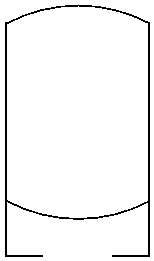
Vessel with carrier ring
ISO10628-X8005
-
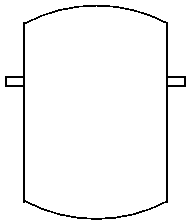
Jacketed vessel
ISO10628-X2069
ISO14617-X2069
http://data.posccaesar.org/rdl/RDS292904
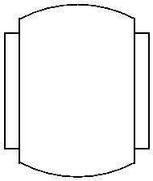
Vessel with dished heads and external electric heater
ISO10628-X2070
ISO14617-X2070
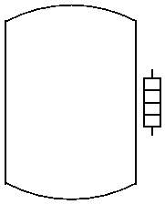
Vessel with dished heads and insultation
ISO10628-X8098
-
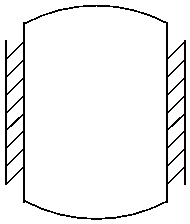
Vessel with dished heads and indication of filling level
ISO10628-X8007
-
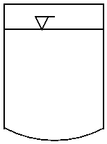
Spherical vessel with feet
ISO10628-X8010
-
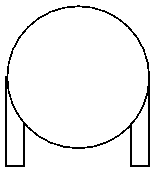
Vessel with full-tube coil
ISO10628-X8000
-
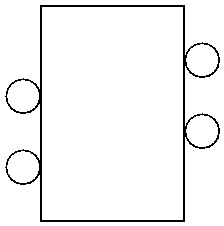
Vessel with semi-tube coil
ISO10628-X8001
-
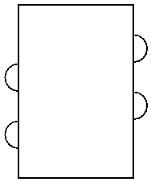
Horizontal vessel with boot
ISO10628-X8202
-
http://data.posccaesar.org/rdl/RDS4316756198
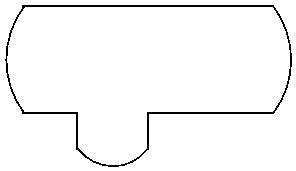
Open storage
ISO10628-2065
ISO14617-2065
http://data.posccaesar.org/rdl/RDS15936191
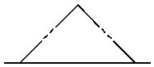